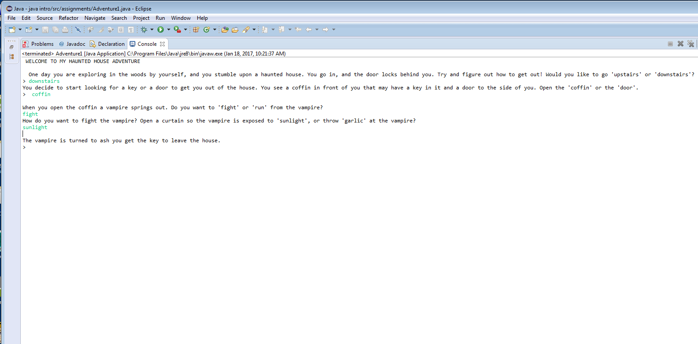
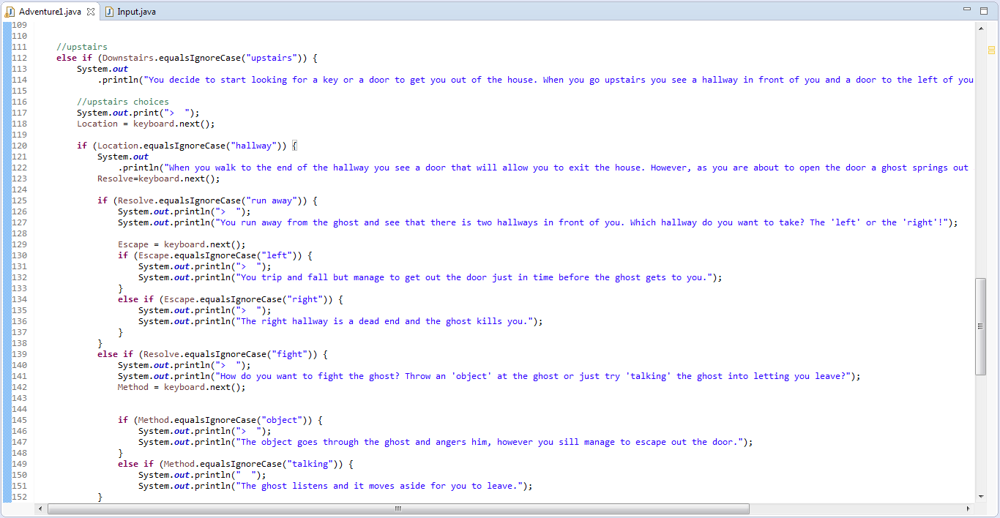

Exploring Computer Science
My Collection of Programming
Projects and Assignments
Java Content
Java- Choose Your Own Adventure Story
Our Java Choose Your Own Adventure Story is a program that we coded where the reader is the main character and gets to make choices that affect how the story goes. Depending on what choices the reader makes, the story can have a good, okay, or bad ending. In my story, my main character stumbles upon a haunted house, and must make four decisions to get out of the hanuted house. The decisions that the user makes for the main character changes the path of the story so that the character is facing different obstacles every decision made.
The concepts that I learned from doing this Adventure Story project is how to use if statemtents, strings, and a keyboard scanner in java. I learned how to use if statements through coding all the different paths for the story after the user made each decision. I learned to how to use strings in java in order to organize each set of new decisions options into groups. I learned how to use the keyboard scanner method in order for the computer to scan what the user typed for their decision option, and then based on the user's typed decision, be able to proceed with the following statements and quesions that go with that decision.

